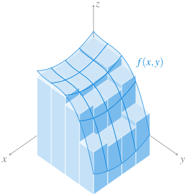
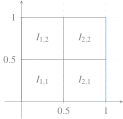
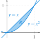
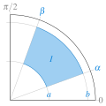
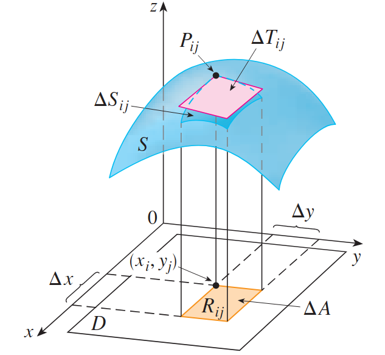

Análisis Matemático
Integrales de funciones de varias variables
Universidad CEU San Pablo
Sumas de Riemann
Definición 1 (Intervalo \(n\) dimensional) Dados \(n\) intervalos cerrados de \(\mathbb{R}\) \(I_i=[a_i,b_i]\) \(i=1\ldots n\), su producto cartesiano \(I = I_1\times \cdots \times I_n\) se conoce como intervalo \(n\) dimensional cerrado o hiperrectángulo.
En \(\mathbb{R}^2\), el intervalo \([a_x,b_x]\times [a_y,b_y]\) define un rectángulo, mientras que en \(\mathbb{R}^3\) el intervalo \([a_x,b_x]\times [a_y,b_y]\times [a_z,b_z]\) define una caja.
Definición 2 (Partición de un intervalo \(n\) dimensional) Dado un intervalo \(n\) dimensional cerrado \(I=I_1\times\cdots\times I_n\), con \(I_i=[a_i,b_i]\) \(i=1,\ldots,n\), y una partición \(P_i=\{x_{i,0}=a_i,x_{i,1}\ldots,x_{i,m_i}=b_i\}\) de cada intervalo \(I_i\), el producto cartesiano \(P=P_1\times\cdots\times P_n\) se conoce como partición \(n\) dimensional de \(I\).
El conjunto de todas las particiones \(n\) dimensionales de \(I\) se denota \(\mathcal{P}(I)\).
Definición 3 (Sumas de Riemann) Dada una función \(f:I\to \mathbb{R}\) acotada en el intervalo \(n\) dimensional \(I\subset \mathbb{R}^n\) y una partición \(n\) dimensional \(P\) de \(I\), se define la suma inferior de Riemann de \(f\) respecto de \(P\), y se denota \(s(f,P)\), como
\[ s(f,P) = \sum_{i_1=1}^{m_1}\cdots \sum_{i_n=1}^{m_n} m_{i_1,\ldots,i_n} (x_{1,i_1}-x_{1,i_1-1})\cdots (x_{n,i_n}-x_{n,i_n-1}), \]
donde \(m_{i_1,\ldots,i_n} = \inf\{f(x_1,\ldots,x_n): x_j\in[x_{j,i_j-1}, x_{j,i_j}]\ \forall j=1,\ldots, n\}\).
Del mismo modo, se define la suma superior de Riemann de \(f\) respecto de \(P\), y se denota \(S(f,P)\), como
\[ S(f,P) = \sum_{i_1=1}^{m_1}\cdots \sum_{i_n=1}^{m_n} M_{i_1,\ldots,i_n} (x_{1,i_1}-x_{1,i_1-1})\cdots (x_{n,i_n}-x_{n,i_n-1}), \]
donde \(M_{i_1,\ldots,i_n} = \sup\{f(x_1,\ldots,x_n): x_j\in[x_{j,i_j-1}, x_{j,i_j}]\ \forall j=1,\ldots, n\}\).
Aunque la definición es un poco enrevesada para \(\mathbb{R}^n\), si \(f(x,y)\) es una función de dos variables acotada en el intervalo \(I=[a,b]\times [c,d]\subset \mathbb{R}^2\), y \(P=P_x\times P_y\) es una partición de \(I\) con \(P_x=\{x_0=a,x_1,\ldots, x_n=b\}\) y \(P_x=\{y_0=c,y_1,\ldots, y_m=d\}\), las sumas de Riemann inferior y superior de \(f\) respecto de \(P\) son
\[\begin{align*} s(f,P) &= \sum_{i=1}^n \sum_{j=1}^m m_{ij}(x_i-x_{i-1})(y_j-y_{j-1}), \\ S(f,P) &= \sum_{i=1}^n \sum_{j=1}^m M_{ij}(x_i-x_{i-1})(y_j-y_{j-1}), \end{align*}\]
donde \(m_{ij}\) y \(M_{ij}\) son el ínfimo y el supremo de \(\{f(x,y): (x,y)\in [x_{i-1},x_i]\times [y_{j-1},y_j]\}\).
Gráficamente, si \(f(x,y)\) es una función positiva en \(I\), la suma inferior se puede interpretar como la suma de los volúmenes de los prismas de base rectangular con lados \([x_{i-1},x_i]\) y \([y_{j-1},y_j]\) y altura \(m_{ij}\).
Suma inferior de Riemann en \(\mathbb{R}^2\)
Ejemplo 1 Veamos cómo calcular las sumas de Riemann de la función \(f(x,y)=x^2y\) en el rectángulo \([0,1]\times [0,1]\) para la partición \(P=\{0, 0.5, 1\}\times \{0, 0.5, 1\}\)
Esta partición descompone el intervalo bidimensional \([0,1]\times [0,1]\) en \(4\) rectángulos (en realidad cuadrados) como los que se ven la siguiente figura.

Como \(f\) es creciente tanto en \(x\) como en \(y\) en el intervalo \(I\), alcanzará el mínimo en el extremo inferior izquierdo de cada subintervalo y el máximo en el extremo superior derecho. Por tanto, la suma inferior de Riemann es
\[\begin{align*} s(f,P) &= f(0,0)(0.5-0)(0.5-0) + f(0,0.5)(0.5-0)(1-0.5) \\ &+ f(0.5,0)(1-0.5)(0.5-0) + f(0.5, 0.5)(1-0.5)(1-0.5) \\ &= 0\cdot 0.25 + 0 \cdot 0.25 + 0 \cdot 0.25 + 0.125 \cdot 0.25 = 0.03125. \end{align*}\]
Y la suma superior de Riemann es
\[\begin{align*} S(f,P) &= f(0.5,0.5)(0.5-0)(0.5-0) + f(0.5,1)(0.5-0)(1-0.5) \\ &+ f(1,0.5)(1-0.5)(0.5-0) + f(1, 1)(1-0.5)(1-0.5) \\ &= 0.125\cdot 0.25 + 0.25 \cdot 0.25 + 0.5 \cdot 0.25 + 1 \cdot 0.25 = 0.46875. \end{align*}\]
Integral de Riemann múltiple
Definición 4 (Integral inferior y superior de Riemann) Dada una función \(f:I\to \mathbb{R}\) acotada en el intervalo \(n\) dimensional \(I\subset \mathbb{R}^n\) y una partición \(n\) dimensional \(P\) de \(I\), se define la integral inferior de Riemann de \(f\) en \(I\), como
\[ \underline{\int_I} f = \sup\{s(f,P): P\in\mathcal{P}(I)\}. \]
Y se define la integral superior de Riemann de \(f\) en \(I\), como
\[ \overline{\int_I} f = \inf\{S(f,P): P\in\mathcal{P}(I)\}. \]
Definición 5 Dada una función \(f:I\to \mathbb{R}\) acotada en el intervalo \(n\) dimensional \(I\subset \mathbb{R}^n\), se dice que \(f\) es integrable Riemann en \(I\) si
\[ \underline{\int_I} f = \overline{\int_I}f, \]
y a este valor se le llama integral de Riemann o integral definida de \(f\) en \(I\) y se denota por
\[ \int_I f \quad \mbox{o bien} \quad \int_I f(x_1,\ldots,x_n)\,dA, \] donde \(dA = dx_1\cdots dx_n\).
Proposición 1 Si \(f:I\to \mathbb{R}\) es integrable Riemann en el intervalo \(n\) dimensional \(I\subset \mathbb{R}^n\), entonces
\[ \int_I f = \lim_{m\to \infty} \sum_{i_1=1}^m\cdots \sum_{i_n=1}^m f(x_{1,i_1},\ldots, x_{n,i_n})\Delta A, \]
donde \(P\) es una partición de \(I\) en \(m^n\) subintervalos de igual tamaño y \(\Delta A = (x_{1,i_1}-x_{1,i_1-1})\cdots (x_{n,i_n}-x_{n,i_n-1})\) es el hipervolumen de los subintervalos de la partición.
En el caso de una función de dos variables \(f(x,y)\) la proposición anterior establece que si \(f\) es integrable Riemann en un intervalo \([a,b]\times [c,d]\), entonces
\[ \int_I f = \lim_{n\to \infty}\sum_{i=1}^n\sum_{j=1}^n f(x_i, y_j)\Delta A, \]
donde \(P_n = \{x_0=a,x_1,\ldots,x_n=b\}\times \{y_0=c,y_1,\ldots,y_n=d\}\) y \(\Delta A = (x_i-x_{i-1})(y_j-y_{j-1})\), es el área de los rectángulos definidos por cada subintervalo de la partición. Es decir, la integral de Riemann aparece al tomar particiones cada vez más refinadas con subintervalos de igual tamaño y hacer la suma de las áreas de los subintervalos multiplicadas por el valor de la función en el extremo superior derecho del subintervalo.
Cuando se quieren hacer explícitas las variables de las que depende la función \(f\), la integral de Riemann se suele escribir
\[ \int_{I} f(x,y) \,dx\,dy \]
para funciones de dos variables y
\[ \int_{I} f(x,y,z) \,dx\,dy\,dz \]
para funciones de tres variables.
Propiedades de las Integrales de Riemann múltiples
Las propiedades de la integral de Riemann para funciones de una variable también se pueden generalizar para integrales de Riemann múltiples.
Teorema 1 Si \(f,g:I\to\mathbb{R}\) son dos funciones integrables Riemann en un intervalo \(n\) dimensional \(I\), entonces
\(f+g\) es integrable Riemann en \(I\) y \(\int_I (f+g) = \int_I f + \int_I g.\)
Para cualquier \(c\in\mathbb{R}\), \(cf\) es integrable Riemann en \(I\) y \(\int_I cf = c\int_I f\).
Si \(f(x_1,\ldots,x_n) \leq g(x_1,\ldots,x_n)\) \(\forall (x_1,\ldots,x_n)\in I\), entonces \(\int_I f \leq \int_I g\).
Integrales múltiples iteradas
El procedimiento para reducir el cálculo de una integral múltiple al cálculo de varias integrales simples es, en el fondo, el mismo que se utilizó para calcular derivadas parciales, es decir, realizar integrales simples de las funciones parciales que se obtienen al fijar como constantes todas las variables excepto aquella con respecto a la que se integra.
Veamos el procedimiento para una función de dos variables. Supongamos que \(f(x,y)\) es integrable Riemann en el intervalo \(I=[a,b]\times [c,d]\). Si mantenemos \(x\) constante, podemos calcular la integral definida simple con respecto a \(y\) en el intervalo \([c,d]\), es decir, \(\int_c^d f(x,y)\, dy\). Para cada valor de \(x\), esta integral tomará un valor distinto, por lo que podemos definir la función
\[ A(x) = \int_c^d f(x,y)\,dy, \]
que solo depende de \(x\). Si ahora se integra esta función con respecto a \(x\) en el intervalo \([a,b]\), se tiene
\[ \int_a^b A(x)\,dx = \int_a^b\int_c^d f(x,y)\,dy\,dx. \]
Esta integral se conoce como integral doble iterada, primero con respecto a \(y\) y después con respecto a \(x\).
De manera similar, podríamos haber integrado primero con respecto a \(x\) y luego con respecto a \(y\), y tendríamos esta otra integral doble iterada
\[ \int_c^d\int_a^b f(x,y)\,dx\,dy. \]
Teorema 2 (Fubini) Si \(f(x,y)\) es una función continua en un intervalo \(I=[a,b]\times [c,d]\), entonces
\[ \int_I f(x,y)\, dA = \int_a^b\int_c^d f(x,y)\,dy\,dx = \int_c^d\int_a^b f(x,y)\,dx\,dy. \]
Ejemplo 2 La integral doble de la función \(f(x,y)=12-2x-y^2\) en el intervalo \(I=[0,1]\times[0,3]\) es
\[\begin{align*} \int_I f(x,y)\, dA &= \int_0^1 \int_0^3 12-2x-y^2 \,dy\,dx = \int_0^1 \left[12y-2xy-\frac{y^3}{3}\right]_0^3\,dx \\ &= \int_0^1 36-6x-\frac{3^3}{3}\, dx = \int_0^1 27-6x\,dx \\ &= [27x-3x^2]_0^1 = 27-3 = 24. \end{align*}\]
Podríamos haber llegado a este mismo resultado haciendo la otra integral iterada
\[\begin{align*} \int_I f(x,y)\, dA &= \int_0^3 \int_0^1 12-2x-y^2 \,dx\,dy = \int_0^3 \left[12x-x^2-xy^2\right]_0^1\,dy \\ &= \int_0^3 12-1-y^2\, dy = \int_0^3 11-y^2\,dy \\ &= \left[11y-\frac{y^3}{3}\right]_0^3 = 33 - \frac{3^3}{3} = 24. \end{align*}\]
Aunque cuando la función es integrable Riemann el orden de integración de las integrales iteradas no importa, a menudo, una integral iterada suele ser más fácil de calcular que la otra.
Ejemplo 3 Para calcular la integral de la función \(f(x,y) = xe^{xy}\) en el intervalo \(I=[0,1]\times [0,1]\), si primero integramos con respecto a \(y\) y después con respecto a \(x\) se tiene
\[\begin{align*} \int_I f(x,y)\, dA &= \int_0^1 \int_0^1 xe^{xy}\,dy\,dx = \int_0^1 \left[e^{xy}\right]_0^1 \,dx\\ &= \int_0^1 e^x-1\,dx = [e^x-x]_0^1 = e - 2. \end{align*}\]
Sin embargo, si primero integramos con respecto a \(x\) y luego con respecto a \(y\) se tiene una integral mucho más difícil de calcular.
En el caso de que \(f(x,y)\) pueda factorizarse como producto de funciones que sólo dependen de \(x\) o de \(y\), entonces el cálculo de la integral doble se simplifica.
Proposición 2 Si \(f(x,y)=g(x)h(y)\) es integrable Riemann en el intervalo \(I=[a,b]\times [c,d]\), entonces
\[ \int_I f(x,y)\, dA = \int_a^b g(x)\,dx \int_c^d h(y)\,dy. \]
Ejemplo 4 La integral doble de la función \(f(x,y) = e^{2x-3y}\) en el intervalo \(I=[0,1]\times [0,2]\) es
\[\begin{align*} \int_I e^{2x-3y} \,dx\,dy &= \int_I e^{2x}e^{-3y} \,dx\,dy = \int_0^1 e^{2x}\,dx\, \int_0^2 e^{-3y}\,dy \\ &= \left[\frac{e^{2x}}{2}\right]_0^1\, \left[\frac{-e^{-3y}}{3}\right]_0^2 = \left(\frac{e^2}{2}-\frac{1}{2}\right)\left(\frac{-e^6}{3}+\frac{1}{3}\right) \end{align*}\]
Integrales sobre regiones no regulares
En general, la integral de Riemann de una función \(f\) sobre un intervalo \(n\) dimensional puede extenderse a una región irregular acotada \(R\) simplemente tomando un intervalo \(n\) dimensional \(I\) que incluya la región, es decir \(R\subseteq I\) y redefiniendo \(f\) como
\[ F(x_1,\ldots,x_n) = \begin{cases} f(x_1,\ldots,x_n) & \mbox{si $(x,1,\ldots,x_n)\in R$}\\ 0 & \mbox{si $(x,1,\ldots,x_n)\in I\setminus R$} \end{cases} \].
y calculando la integral de Riemann de \(F\) sobre \(I\) como se ha visto en la sección anterior, es decir,
\[ \int_{R} f(x_1,\ldots,x_n)\,dA = \int_{I} F(x_1,\ldots,x_n)\,dA. \]
Si \(R\) es una región del plano \(xy\) delimitada por las gráficas de dos funciones \(g_1(x)\) y \(g_2(x)\), es decir,
\[ R = \{(x,y): a\leq x \leq b, g_1(x)\leq y \leq g_2(x)\}, \]
la integral de Riemann \(f\) sobre esta región se puede calcular mediante la integral iterada
\[ \int_{R} f(x,y)\,dA = \int_a^b \int_{g_1(x)}^{g_2(x)} f(x,y)\,dy\,dx. \]
Del mismo modo, si \(R\) es una región del plano \(xy\) delimitada por las gráficas de dos funciones \(g_1(y)\) y \(g_2(y)\), es decir,
\[ R = \{(x,y): g_1(y)\leq x \leq g_2(y), a\leq y\leq b\}, \]
la integral de Riemann \(f\) sobre esta región se puede calcular mediante la integral iterada
\[ \int_{R} f(x,y)\,dA = \int_a^b \int_{g_1(y)}^{g_2(y)} f(x,y)\,dx\,dy. \]
Ejemplo 5 Veamos cómo calcular la integral doble de la función \(f(x,y)=xy\) sobre la región encerrada entre las curvas \(y=x\) e \(y=x^2\). La región encerrada entre las curvas se muestra en el siguiente gráfico.

Esta región puede expresarse como \(R=\{(x,y)\in \mathbb{R}^2: 0\leq x\leq 1, x^2\leq y\leq x\}\), por lo que la integral doble de \(f\) sobre esta región puede calcularse mediante la integral iterada
\[\begin{align*} \int_0^1\int_{x^2}^x xy\,dy\,dx &= \int_0^1 \left[x\frac{y^2}{2}\right]_{x^2}^x\,dx = \int_0^1 x\frac{x^2-x^4}{2}\,dx = \int_0^1 \frac{x^3-x^5}{2}\,dx\\ &= \left[\frac{x^4}{8}-\frac{x^6}{12}\right]_0^1 = \frac{1}{8}-\frac{1}{12} = \frac{1}{24}. \end{align*}\]
En este caso, la región también puede expresarse como \(R=\{(x,y)\in \mathbb{R}^2: y\leq x\leq \sqrt{y}, 0\leq y\leq 1\}\), por lo que la integral doble de \(f\) sobre esta región también puede calcularse mediante la integral iterada
\[\begin{align*} \int_0^1\int_y^{\sqrt{y}} xy\,dx\,dy &= \int_0^1 \left[\frac{x^2}{2}y\right]_y^{\sqrt{y}}\,dy = \int_0^1 \frac{y-y^2}{2}y\,dy = \int_0^1 \frac{y^2-y^3}{2}\,dx\\ &= \left[\frac{y^3}{6}-\frac{y^4}{8}\right]_0^1 = \frac{1}{6}-\frac{1}{8} = \frac{1}{24}. \end{align*}\]
En este tipo de integrales iteradas, hay que integrar siempre primero con respecto a la variable que está acotada por las funciones que definen la región y después con respecto a la variable que está acotada por valores fijos. Cuando interese realizar la integral iterada en el otro orden, porque resulte más sencilla, previamente hay que cambiar la expresión de la región de integración mediante las funciones inversas, siempre y cuando sea posible.
Ejemplo 6 Para calcular la integral de la función \(f(x,y)=e^{-y^2}\) en la región \(R=\{(x,y)\in \mathbb{R}^2: 0\leq x\leq 1, 2x\leq y\leq 2\}\), como \(y\) está acotada por una función de \(x\), habría que hacer la integral iterada
\[ \int_0^1\int_{2x}^2 e^{-y^2}\,dy\,dx. \]
Sin embargo, la función \(e^{-y^2}\) no tiene primitiva elemental, por lo que necesariamente hay que realizar la integral iterada en el otro orden, pero para ello previamente hay que expresar la región como \(R=\{(x,y)\in \mathbb{R}^2: 0\leq x\leq \frac{y}{2}, 0\leq y\leq 2\}\), con lo que la integral doble sobre esta región es
\[\begin{align*} \int_0^2\int_0^{y/2} e^{-y^2}\,dx\,dy &= \int_0^2 e^{-y^2}[x]_0^{y/2}\,dy = \int_0^2 e^{-y^2}\frac{y}{2}\,dy \\ &= \left[\frac{-e^{-y^2}}{4}\right]_0^2 = \frac{-e^{-4}+1}{4}. \end{align*}\]
Integrales dobles en coordenadas polares
Para integrar determinadas funciones es preferible hacer un cambio a coordenadas polares. Recordemos que para pasar de coordenadas cartesianas \((x,y)\) a coordenadas polares \((r,\theta)\) se utilizan las fórmulas
\[ r = \sqrt{x^2 + y^2} \qquad \theta = \operatorname{arcsin}\left(\frac{y}{\sqrt{x^2+y^2}}\right) = \operatorname{arccos}\left(\frac{x}{\sqrt{x^2+y^2}}\right), \]
y para pasar de coordenadas polares a cartesianas se utiliza la fórmula
\[ x = r\cos(\theta) \qquad y = r\operatorname{sen}(\theta). \]
En coordenadas polares un intervalo bidimensional \(I=[a,b]\times[\alpha,\beta]\) define un sector de disco como el que se muestra a continuación.
Intervalo bidimensional en coordenadas polares.
Si la función \(f(x,y)\) es continua sobre un intervalo polar \(I=[a,b]\times[\alpha,\beta]\) con \(\beta-\alpha\leq 2\pi\), la integral doble de \(f\) sobre esta región se puede calcular mediante la integral iterada
\[ \int_I f(x,y)\,dA = \int_{\alpha}^{\beta}\int_a^b f(r\cos(\theta),r\operatorname{sen}{\theta})r\,dr\,d\theta. \]
Ejemplo 7 La gráfica de la función \(f(x,y)=\sqrt{a^2-x^2-y^2}\) es una semiesfera de radio uno centrada en el origen de coordenadas. Para calcular su volumen, la región de integración es el círculo de radio uno centrado en el origen de coordenadas, que puede expresarse como \(R=\{(x,y)\in\mathbb{R}^2: 0\leq x\leq 1, -\sqrt{a^2-x^2}\leq y\leq \sqrt{a^2-x^2}\}\). En este caso la integral en coordenadas rectangulares es complicada y merece la pena hacer la integral en coordenadas polares.
\[\begin{align*} \int_I f(x,y)\,dA &= \int_0^{2\pi}\int_0^a f(r\cos(\theta),r\operatorname{sen}{\theta})r\,dr\,d\theta \\ &= \int_0^{2\pi}\int_0^a \sqrt{a^2-(r\cos(\theta))^2-(r\operatorname{sen}(\theta))^2}r\,dr\,d\theta \\ &= \int_0^{2\pi}\int_0^a \sqrt{a^2-r^2(\cos(\theta)^2+\operatorname{sen}(\theta)^2)}r\,dr\,d\theta \\ &= \int_0^{2\pi}\int_0^a \sqrt{a^2-r^2}r\,dr\,d\theta = \int_0^{2\pi} -\left[\frac{(a^2-r^2)^{3/2}}{3}\right]_0^a\,d\theta \\ &= \int_0^{2\pi} \frac{a^2}{3}\,d\theta = \left[\frac{a^2\theta}{3}\right]_0^{2\pi} = \frac{2\pi a^2}{3}. \end{align*}\]
Y por tanto, el volumen de la esfera de radio uno centrada en el origen es \(\frac{4}{3}\pi a^2\), que coincide con la fórmula habitual.
Cuando la región de integración es irregular pero puede expresarse de la forma \(R=\{(r,\theta)\in \mathbb{R}^+\times \mathbb{R}: \alpha\leq \theta\leq \beta, g_1(\theta)\leq r\leq g_2(\theta)\}\), la integral doble en coordenadas polares puede calcularse mediante la integral iterada
\[ \int_R f(x.y)\,dA = \int_{\alpha}^{\beta} \int_{g_1(\theta)}^{g_2(\theta)} f(r\cos(\theta),r\operatorname{sen}(\theta))r\,dr\,d\theta. \]
Ejemplo 8 Veamos cómo calcular el volumen encerrado entre la gráfica integral del paraboloide \(f(x,y)=x^2+y^2\) y el plano \(xy\) sobre la circunferencia de ecuación \(x^2+(y^2-1)=1\). En coordenadas polares, la circunferencia que delimita la región de integración puede escribirse como \(R=\{(r,\theta)\in \mathbb{R}^+\times \mathbb{R}: 0\leq \theta\leq \pi, 0\leq r\leq 2\operatorname{sen}(\theta)\}\). Por tanto, podemos calcular la integral de \(f\) sobre la región \(R\) mediante la integral iterada
\[\begin{align*} \int_R f(x,y)\,dA &= \int_0^\pi \int_0^{2\operatorname{sen}(\theta)} f(r\cos(\theta),r\operatorname{sen}{\theta})r\,dr\,d\theta \\ &= \int_0^\pi \int_0^{2\operatorname{sen}(\theta)} ((r\cos(\theta))^2 + (r\operatorname{sen}{\theta})^2)r\,dr\,d\theta \\ &= \int_0^\pi \int_0^{2\operatorname{sen}(\theta)} r^3\,dr\,d\theta = \int_0^\pi \left[\frac{r^4}{4}\right]_0^{2\operatorname{sen}(\theta)} \,d\theta \\ &= \int_0^\pi 4\operatorname{sen}(\theta)^4 \,d\theta = \int_0^\pi (1-\cos(2\theta))^2\,d\theta \\ &= \int_0^\pi 1 - 2\cos(2\theta) + \cos(2\theta)^2 \,d\theta \\ &= \int_0^\pi 1 - 2\cos(2\theta) + \frac{1+\cos(4\theta)}{2}\,d\theta \\ &= \left[\theta - \operatorname{sen}(2\theta) + \frac{\theta}{2} + \frac{\operatorname{sen}(4\theta)}{8}\right]_0^\pi = \frac{3}{2}\pi. \end{align*}\]
Cálculo de volúmenes
Cuando \(f(x,y)\) es positiva en el intervalo de integración \(I=[a,b]\times[c,b]\), la integral doble \(\int_I f(x,y)\,dx\,dy\) da el volumen del sólido encerrado entre la superficie de \(f\) y el plano \(xy\) en la región delimitada por \(I\). Ahora bien, si \(f\) es negativa en \(I\), entonces el valor de la integral doble es negativo, por lo que habrá que cambiarla de signo para poder interpretarla como un volumen.
La cosa se complica cuando \(f\) puede tomar valores positivos y negativos en el intervalo \(I\). En tal caso, para obtener el volumen tendremos que calcular la integral del valor absoluto de la función, o bien descomponer el intervalo de integración \(I\) en subintervalos donde la función sea positiva o negativa, integrar la función en cada uno de estos subintervalos y luego sumar el valor absoluto de estas integrales.
Ejemplo 9 Veamos cómo calcular el volumen de la función \(f(x,y)=x^2y\) en el intervalo \(I=[-1,1]\times[-1,1]\). En el intervalo de integración, la función toma valores negativos en el subintervalo \(I_1 = [-1,1]\times[-1,0]\) y valores positivos en el subintervalo \(I_2 = [-1,1]\times[0,1]\), por lo que el volumen encerrado entre la gráfica de la función y el plano \(xy\) viene dado por la suma de las integrales
\[\begin{align*} \int_{I_1} -f(x,y)\,dA &= \int_{-1}^1\int_{-1}^0 -x^2y\,dy\,x = \int_{-1}^1 \left[-x^2\frac{y^2}{2}\right]_{-1}^0\,dx \\ &= \int_{-1}^1 \frac{x^2}{2}\,dx = \left[\frac{x^3}{6}\right]_{-1}^1 \\ &= \frac{1}{6}+\frac{1}{6} = \frac{1}{3}. \end{align*}\]
y
\[\begin{align*} \int_{I_2} f(x,y)\,dA &= \int_{-1}^1\int_0^1 x^2y\,dy\,x = \int_{-1}^1 \left[x^2\frac{y^2}{2}\right]_0^1\,dx \\ &= \int_{-1}^1 \frac{x^2}{2}\,dx = \left[\frac{x^3}{6}\right]_{-1}^1 \\ &= \frac{1}{6}+\frac{1}{6} = \frac{1}{3}, \end{align*}\]
es decir,
\[ \int_I x^2y\,dA = \int_{I_1} x^2y\,dA + \int_{I_2} x^2y\,dA = \frac{1}{3} + \frac{1}{3} = \frac{2}{3}. \]
Obsérvese que también se puede usar la integral doble para calcular el área de una región plana integrando sobre esta región la función \(f(x,y)=1\), ya que cuanto la altura \(1\), el volumen coincide con el área de la base.
Del mismo modo se puede usar una integral tripe para calcular el volumen de una región tridimensional.
Cálculo del area de una superficie
Aproximación de la superficie de una función mediante paralelogramos.
Para cada paralelogramo \(T_{ij}\) consideramos los vectores \(\mathbf{u}_{ij}\) y \(\mathbf{v}_{ij}\) con origen en \((x_i, y_j)\) y con la misma dirección y longitud que los lados del paralelogramo.
Como \(\mathbf{u}_{ij}\) está contenido en la intersección plano tangente a \(f\) en \((x_i,y_j,f(x_i,y_j))\), con el plano \(y=y_j\), se tiene que su pendiente es \(f'_x(x_i,y_j)\), por lo que sus coordenadas son \((\Delta x, 0, f'_x(x_i,y_j)\Delta x)\).
Del mismo modo, como \(\mathbf{v}_{ij}\) está contenido en la intersección plano tangente, con el plano \(x=x_i\), se tiene que su pendiente es \(f'_y(x_i,y_j)\), por lo que sus coordenadas son \((0, \Delta y, f'_y(x_i,y_j)\Delta y)\).
Así pues, el producto vectorial de \(\mathbf{u}_{ij}\) y \(\mathbf{v}_{ij}\) es
\[\begin{align*} \mathbf{u}_{ij}\times\mathbf{v}_{ij} &= \begin{vmatrix} \mathbf{i} & \mathbf{j} & \mathbf{k} \\ \Delta x & 0 & f'_x(x_i,y_j)\Delta x \\ 0 & \Delta y & f'_y(x_i,y_j)\Delta y \end{vmatrix} \\ &= -f'_x(x_i,y_j)\Delta x\Delta y \mathbf{i} -f'_y(x_i,y_j)\Delta x\Delta y \mathbf{j} + \Delta x\Delta y \mathbf{k} \\ &= (-f'_x(x_i,y_j), -f'_y(x_i,y_j), 1)\Delta x\Delta y, \end{align*}\]
y el área del paralelogramo \(T_{ij}\) es
\[ \Delta T_{ij} = |\mathbf{u}_{ij}\times\mathbf{v}_{ij}| = \sqrt{f'_x(x_i,y_j)^2 + f'_y(x_i,y_j)^2 + 1}\Delta x\Delta y. \]
De este modo, el área de la superficie de \(f\) sobre el intervalo \(I\) se puede aproximar mediante la suma
\[ \sum_{i=1}^n\sum_{j=1}^n \Delta T_{ij} = \sum_{i=1}^n\sum_{j=1}^n \sqrt{f'_x(x_i,y_j)^2 + f'_y(x_i,y_j)^2 + 1}\Delta x\Delta y. \]
Tomando particiones cada vez más refinadas, en el límite cuando \(n\to \infty\) se tiene que el área de la superficie de \(f\) sobre el intervalo \(I\) viene dado por la integral
\[ A_I(f) = \int_I \sqrt{f'_x(x_i,y_j)^2 + f'_y(x_i,y_j)^2 + 1}\,dA. \]
Ejemplo 10 La gráfica de la función \(f(x,y)=\sqrt{a^2-x^2-y^2}\) es la semiesfera de radio \(a\) centrada en el origen de coordenadas. El área de la superficie de esta semiesfera puede calcularse mediante la integral
\[ A_R(f) = \int_R \sqrt{f'_x(x_i,y_j)^2 + f'_y(x_i,y_j)^2 + 1}\,dA \]
donde \(R=\{(x,y)\in \mathbb{R}: -a\leq x\leq a, -\sqrt{a^2-x^2}\leq y\leq \sqrt{a^2-x^2}\}\).
Como las derivadas parciales de \(f\) valen
\[\begin{align*} f'_x(x,y) &= \frac{-x}{\sqrt{a^2-x^2-y^2}}, \\ f'_y(x,y) &= \frac{-y}{\sqrt{a^2-x^2-y^2}}, \end{align*}\]
la integral anterior se puede calcular mediante la integral iterada
\[ A_R(f) = \int_{-a}^a \int_{-\sqrt{a^2-x^2}}^{\sqrt{a^2-x^2}} \sqrt{\frac{x^2}{a^2-x^2-y^2} + \frac{y^2}{a^2-x^2-y^2} + 1}\,dy\,dx. \]
Esta integral, no obstante, es difícil de calcular, por lo que merece la pena hacer el cambio a coordenadas polares, de manera que la región de integración polar es \(R=\{(r,\theta)\in \mathbb{R}^+\times \mathbb{R}: 0\leq \theta\leq 2\pi, 0\leq r\leq a\}\) y la integral se convierte en
\[\begin{align*} A_R(f) &= \int_0^{2\pi} \int_0^a \sqrt{\frac{r^2\cos(\theta)^2}{a^2-r^2}+\frac{r^2\operatorname{sen}(\theta)^2}{a^2-r^2}+1}r\,dr\,d\theta \\ &= \int_0^{2\pi} \int_0^a \sqrt{\frac{a^2}{a^2-r^2}}r\,dr\,d\theta. \end{align*}\]
Esta última integral es impropia ya que \(\frac{a^2}{a^2-r^2}\to \infty\) cuando \(r\to a\), pero la integral es finita, ya que
\[ \lim_{s\to a^-}\int_0^s \sqrt{\frac{a^2}{a^2-r^2}} r\,dr = \lim_{s\to a^-} a(-\sqrt{a^2-s^2}+a) = a^2, \]
y siguiendo con el cálculo de la integral anterior se tiene
\[ A_R(f) = \int_0^{2\pi} a^2\,d\theta = 2\pi a^2, \]
por lo que el área de la esfera de radio \(a\) centrada en el origen de coordenadas es \(4\pi a^2\), que coincide con la fórmula habitual.
Integrales sobre curvas
En ocasiones, interesa calcular el area comprendida entre una superficie y el plano \(XY\) a lo largo de una trayectoria descrita sobre este plano. Las integrales sobre curvas permiten sumar valores de una función sobre una curva, en lugar de hacerlo sobre una región bidimensional completa.

Integral sobre una curva
Si la curva \(C\) está dada por una función vectorial suave \(\mathbf{r}(t) = (x(t), y(t))\), \(t\in[a,b]\), podemos tomar una partición del intervalo \([a,b]\) en \(n\) subintervalos \(P_n(a,b) = \{t_0 = a, t_1,\ldots, t_n=b\}\) y aproximar la curva \(C\) mediante el polígono que resulta de unir con segmentos los puntos \(\{\mathbf{r}(t_0), \ldots, \mathbf{r}(t_n)\}\). Si para cada uno de estos segmentos \(i=1\ldots n\) calculamos el área del rectángulo con base el segmento y altura \(f(\mathbf{r}(t_i))\), la suma
\[ \sum_{i=1}^n f(\mathbf{r}(t_i)) \Delta S_i, \]
donde \(\Delta S_i\) es la longitud del segmento \(i\), nos da una aproximación del area que queda entre la superficie y el plano \(XY\) a lo largo de la curva \(C\).
Esta suma, es una suma de Riemann, y al tomar particiones de mayor tamaño, en el límite cuando \(n\to\infty\) obtenemos el área real bajo la superficie de \(f\) sobre la curva \(C\).
Definición 6 (Integral de curva) Dado un campo escalar \(f(x_1,\ldots,x_n)\) y una curva suave \(C\) de longitud finita en \(\mathbb{R}^n\), con una parametrización dada por una función vectorial \(\mathbf{r}(t)\) \(t\in [a,b]\), la integral de curva de \(f\) sobre \(C\) es
\[ \int_C f(\mathbf{r}(t)) \, ds = \lim_{n\to\infty}\sum_{i=1}^n f(\mathbf{r}(t_i)) \Delta S_i \]
si el límite existe.
Puede demostrarse que si \(f\) es continua el límite anterior existe. Además, tal y como vimos en al calcular la longitud de una trayectoria,
\[ ds = |\mathbf{r}'(t)| \, dt, \]
de manera que la integral de curva puede calcularse mediante la integral definida
\[ \int_C f(\mathbf{r}(t)) \, ds = \int_a^b f(\mathbf{r}(t)) |\mathbf{r}'(t)|\, dt. \]
Integrales sobre curvas en el plano
En el caso de una función de dos variables \(f(x,y)\) y una curva \(C\) sobre el plano \(\mathbb{R}^2\) dada por la función vectorial \(\mathbf{r}(t)=(x(t), y(t))\), la integral anterior es
\[ \int_C f(x,y)\,ds = \int_a^b f(x(t), y(t))\sqrt{x'(t)^2 + y'(t)^2}\,dt. \]
Ejemplo 11 Calculemos la integral de línea de \(f(x,y)=x^2+y\) sobre el segmento que une los puntos \((0,0)\) y \((1,2)\). Una parametrización sencilla del segmento es \(\mathbf{r}(t)=(t,2t)\) con \(t\in[0,1]\), para la que \(\mathbf{r}'(t)=(1,2)\) y \(\|\mathbf{r}'(t)\|=\sqrt{5}\). Aplicando la definición anterior se obtiene
\[\begin{align*} \int_C f(x,y)\,ds &= \int_0^1 f(t,2t)\,\sqrt{5}\,dt = \sqrt{5}\int_0^1 (t^2+2t)\,dt \\ &= \sqrt{5}\left[\frac{t^3}{3}+t^2\right]_0^1 = \sqrt{5}\left(\frac{1}{3}+1\right) = \frac{4\sqrt{5}}{3}. \end{align*}\]
Integrales sobre curvas en el espacio
Y en el caso de una función de tres variables \(f(x,y,z)\) y una curva \(C\) sobre el espacio \(\mathbb{R}^3\) dada por la función vectorial \(\mathbf{r}(t)=(x(t), y(t), z(t))\), la integral es
\[ \int_C f(x,y,z)\,ds = \int_a^b f(x(t), y(t), z(t))\sqrt{x'(t)^2 + y'(t)^2 + z'(t)}\,dt. \]
Ejemplo 12 Veamos ahora cómo calcular la integral de curva de la función \(f(x,y,z) = x^2 + y^2 + z^2\) sobre la espiral dada por la función vectorial \(\mathbf{r}(t)=(\cos(t), \operatorname{sen}(t), t)\) en el intervalo \(t\in [0,2\pi]\). En este caso, \(\mathbf{r}'(t) = (-\operatorname{sen}(t), \cos(t), 1)\), y la integral de curva es
\[\begin{align*} \int_C f(x,y)\,ds &= \int_0^{2\pi} f(\cos(t),\operatorname{sen}(t), t) \sqrt{(-\operatorname{sen}(t))^2 + \cos(t)^2 + 1}\,dt \\ &= \int_0^{2\pi} (\cos(t)^2 + (-\operatorname{sen}(t))^2 + t^2)\sqrt{2}\, dt \\ &= \sqrt{2}\int_0^{2\pi} (1 + t^2)\,dt = \sqrt{2}\left[t+\frac{t^3}{3}\right]_0^{2\pi} = \sqrt{2}\left(2\pi + \frac{8\pi^3}{3}\right). \end{align*}\]
Centro de masas
Una aplicación física inmediata de las integrales dobles o triples es el cálculo de la masa de una sólido plano o del espacio con densidad variable en cada punto. Si \(\delta(x,y)\) es la densidad en cada uno de los puntos de un sólido que ocupa una región \(R\) del plano \(xy\), la masa total del sólido puede calcularse mediante la integral
\[ m = \int_R \delta(x,y)\,dA, \]
siempre y cuando la función \(\delta\) sea integrable en la región \(R\).
Ejemplo 13 Una placa metálica tiene la forma de región \(R=\{(x,y)\in\mathbb{R}^2: 0\leq x\leq 1, 0\leq y\leq 1-x^2\}\) y la densidad en cada punto viene dada por la función \(\delta(x,y)=xy\) en gr/cm\(^2\). Entonces su masa es
\[\begin{align*} m &= \int_R \delta(x,y)\,dA = \int_0^1 \int_0^{1-x^2} xy\,dy\,dx = \int_0^1 x\left[\frac{y^2}{2}\right]_0^{1-x^2}\,dx \\ &= \int_0^1 x\frac{(1-x^2)^2}{2}\,dx = \int_0^1 \frac{x-2x^3+x^5}{2}\,dx \\ &= \left[\frac{x^2}{4}-\frac{2x^4}{8}+\frac{x^6}{12}\right]_0^1 = \frac{1}{4}-\frac{2}{8}+\frac{1}{12} = \frac{1}{12} \mbox{ gr}. \end{align*}\]
También podemos utilizar las integrales dobles para calcular el momento de cada punto de un sólido \(R\) del plano \(xy\) con respecto a cada uno de los ejes. \[\begin{align*} M_x &= \int_R y\delta(x,y)\,dA \\ M_y &= \int_R x\delta(x,y)\,dA \end{align*}\]
A partir de los momentos resulta sencillo calcular el centro de masas o centroide \((\bar x, \bar y)\) del sólido plano, dividiendo cada momento por la masa del sólido, es decir,
\[\begin{align*} \bar x &= \frac{M_y}{m} = \frac{\int_R x\delta(x,y)\,dA}{\int_R \delta(x,y)\,dA} \\ \bar y &= \frac{M_x}{m} = \frac{\int_R y\delta(x,y)\,dA}{\int_R \delta(x,y)\,dA} \end{align*}\]
Un sólido plano se comporta como si toda su masa se concentrara en el centroide, de manera que se mantendría en equilibrio horizontal al apoyarlo sobre este punto.
Ejemplo 14 El momento con respecto al eje \(x\) de la placa metálica del ejemplo anterior es
\[\begin{align*} M_x &= \int_R y\delta(x,y)\,dA = \int_0^1 \int_0^{1-x^2} xy^2\,dy\,dx = \int_0^1 x\left[\frac{y^3}{3}\right]_0^{1-x^2}\,dx \\ &= \int_0^1 x\frac{(1-x^2)^3}{3}\,dx = \int_0^1 \frac{x-3x^3+3x^5-x^7}{3}\,dx \\ &= \left[\frac{x^2}{6}-\frac{x^4}{4}+\frac{x^6}{6}-\frac{x^8}{24}\right]_0^1 = \frac{1}{6}-\frac{1}{4}+\frac{1}{6}-\frac{1}{24} = \frac{1}{24} \mbox{ gr$\cdot$ cm}. \end{align*}\]
Del mismo modo, el momento con respecto al eje \(y\) es
\[\begin{align*} M_y &= \int_R x\delta(x,y)\,dA = \int_0^1 \int_0^{1-x^2} x^2y\,dy\,dx = \int_0^1 x^2\left[\frac{y^2}{2}\right]_0^{1-x^2}\,dx \\ &= \int_0^1 x^2\frac{(1-x^2)^2}{2}\,dx = \int_0^1 \frac{x^2-2x^4+x^6}{2}\,dx \\ &= \left[\frac{x^3}{6}-\frac{x^5}{5}+\frac{x^7}{14}\right]_0^1 = \frac{1}{6}-\frac{1}{5}+\frac{1}{14} = \frac{4}{105} \mbox{ gr$\cdot$ cm}. \end{align*}\]
Por lo tanto, el centroide de la placa metálica tendrá coordenadas
\[\begin{align*} \bar x &= \frac{M_x}{m} = \frac{\int_R y\delta(x,y)\,dA}{\int_R \delta(x,y)\,dA} = \frac{1/24}{1/12} = 0.5 \mbox{ cm},\\ \bar y &= \frac{M_y}{m} = \frac{\int_R x\delta(x,y)\,dA}{\int_R \delta(x,y)\,dA} = \frac{4/105}{1/12} = \frac{16}{35} \approx 0.4571 \mbox{ cm}. \end{align*}\]
Valor medio de una función
Definición 7 (Valor medio de una función de varias variables) Dada una función \(f:\mathbb{R}^n\to \mathbb{R}\) integrable sobre una región \(R\subset \mathbb{R}^n\), el valor medio de \(f\) sobre \(R\) es
\[ \bar{f}_R = \frac{\int_R f(x_1,\ldots,x_n)\,dA}{\int_R\,dA} \]
Obsérvese que la integral del denominador \(\int_R\,dA\), para una función de dos variables da el área de la región \(R\), mientras que para una función de tres variables da el volumen de la región \(R\).
Ejemplo 15 En el Ejemplo 5 vimos que la integral doble de la función \(f(x,y)=xy\) sobre la región \(R=\{(x,y)\in \mathbb{R}^2: 0\leq x\leq 1, x^2\leq y\leq x\}\) era \(\int_R xy\,dA = \frac{1}{24}\). Como el área de la región \(R\) es
\[\begin{align*} \int_R \,dA &= \int_0^1 \int_{x^2}^x \,dy\,dx = \int_0^1 [y]_{x^2}^x\,dx = \int_0^1 x-x^2\,dx \\ &= \left[\frac{x^2}{2}-\frac{x^3}{3}\right]_0^1 = \frac{1}{2}-\frac{1}{3} = \frac{1}{6}. \end{align*}\]
el valor medio de \(f\) en \(R\) es
\[ \bar f_R = \frac{\int_R xy\,dA}{\int_R\,dA} = \frac{1/24}{1/6} = \frac{1}{4}. \]